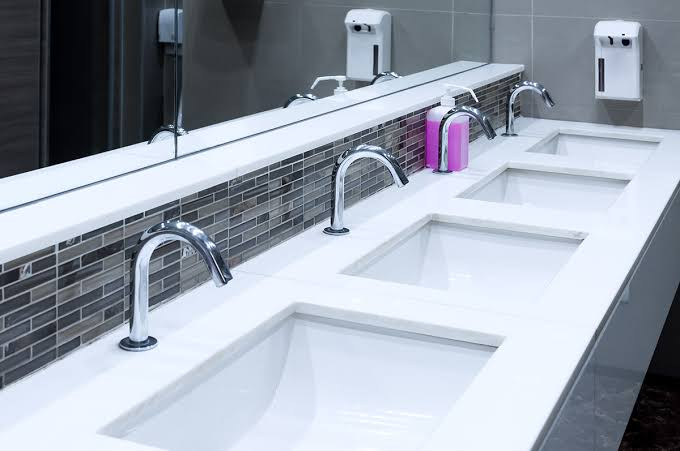
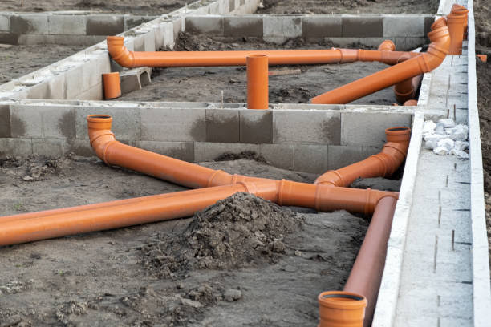
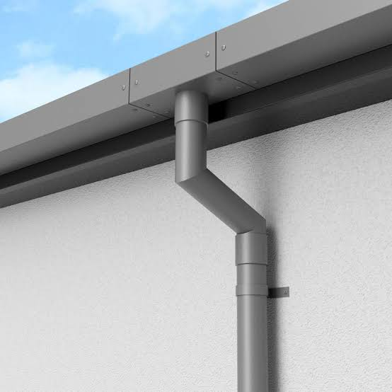
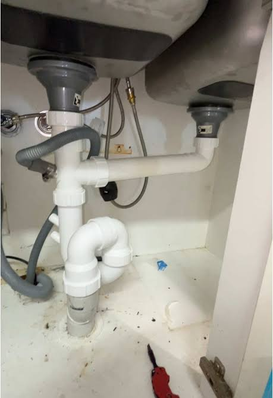
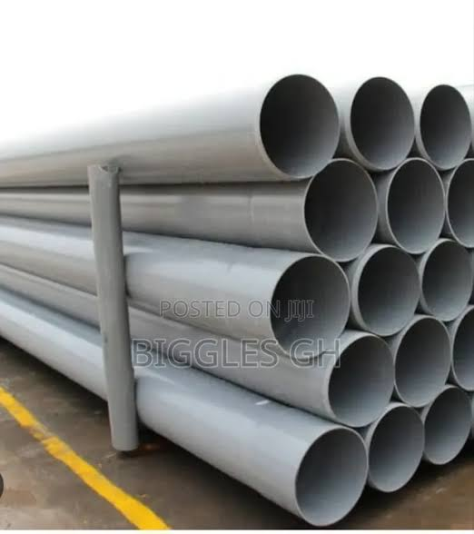
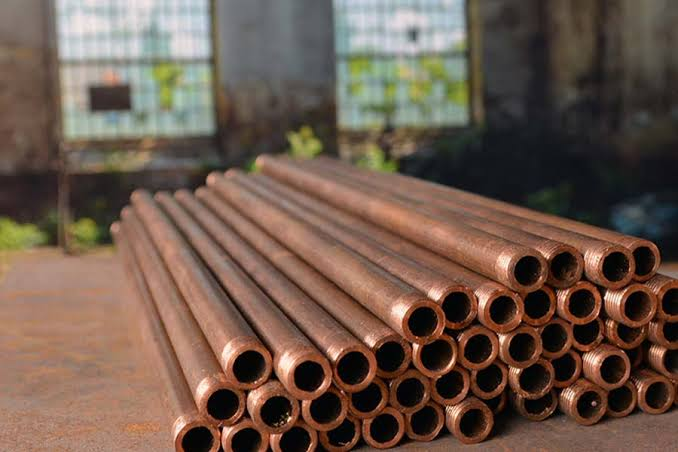
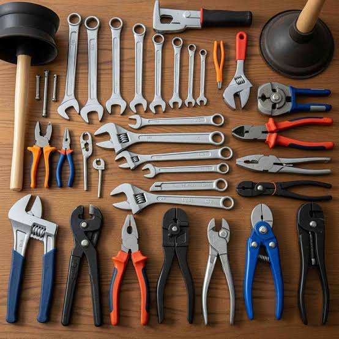
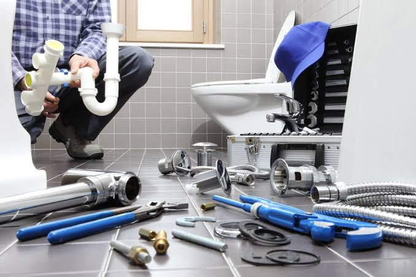
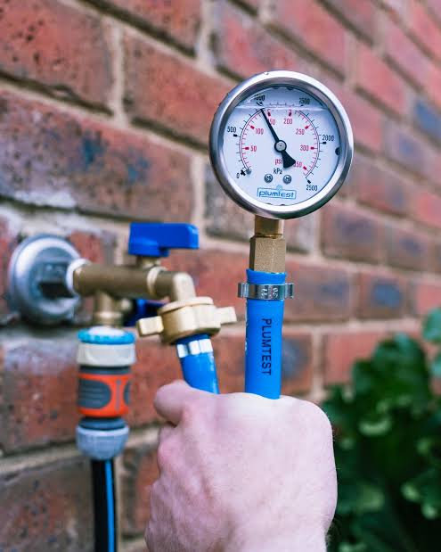
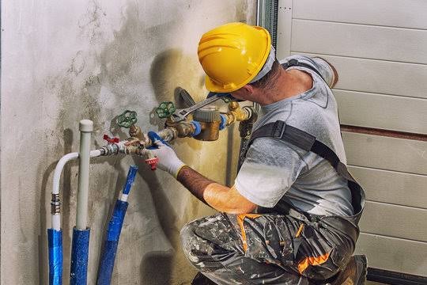

WELCOME TO PLUMBING
WHY DO YOU WANT TO STUDY PLUMBING?
Plumbing teaches learners how water is supplied, drained, controlled and protected in homes, schools, hospitals, and industries so that buildings remain safe, clean and functional.
Introduction to Plumbing
Plumbing is the branch of technical education and practical work that deals with the installation, repair, and maintenance of water supply and drainage systems. It is an important subject because every building needs clean water for drinking, washing, cooking, and sanitation. Without proper plumbing systems, water would be wasted, health would be affected, and buildings would become unsafe and uncomfortable. Plumbing is therefore not only a trade but also a vital service that supports daily life, public health, and economic development. A good plumber must combine knowledge of pipes, fittings, water pressure, flow, and building structures in order to provide safe and reliable services.
The study of plumbing begins with understanding how water moves from the source to the point of use and how wastewater is taken away from the building. Learners must also understand that plumbing work requires precision, patience, and discipline because even a small mistake can cause leaks, damage, contamination, or expensive repairs. Plumbing is a practical subject that links science, mathematics, design, and workmanship. It also helps learners to develop problem-solving skills, neat working habits, and the ability to work with tools responsibly. In schools, plumbing gives students a foundation for future employment, self-employment, and technical growth.
Plumbing turns water into a safe and dependable service that supports health, comfort, and daily life.
Water Supply and Distribution
Water supply systems are designed to bring clean water into a building and distribute it to different points of use such as taps, sinks, showers, toilets, and water heaters. These systems begin from a source, which may be a reservoir, public main, borehole, or storage tank, and then move through pipes to the required areas. The pressure and flow of water must be controlled carefully so that each appliance receives enough water without causing damage or wastage. A plumber must understand how water moves through pipes, how pressure changes with height and distance, and how to prevent leaks or bursts. This knowledge is essential because poor water distribution causes inconvenience, loss of water, and extra cost.
In the study of water supply, learners also learn about storage tanks, valves, stopcocks, float switches, and other fixtures that help regulate water flow. Water supply systems may be direct, where water comes directly from the main, or indirect, where water is stored before distribution. The choice depends on the level of pressure, the size of the building, and the needs of the users. Good design ensures that water reaches every part of the building safely and efficiently. Regular inspection of pipes and fittings also prevents corrosion, contamination, and poor performance over time.

A well-designed water supply system delivers clean water where it is needed without waste or danger.
Cold water systems
Cold water systems provide water at normal temperature for general purposes such as cleaning, washing, and flushing toilets. They can be installed as a simple supply line to taps or as part of a larger system that includes storage tanks and booster pumps. In many buildings, cold water is distributed from the main line through a network of pipes to various outlets. The plumber must ensure that the pipes are of suitable size and are installed with the right slope, support, and protection. If the system is poorly fixed, the water may not reach all outlets properly or may become noisy and inefficient.
Cold water systems also include fittings such as stop valves, gate valves, check valves, and drain valves that control the flow and allow maintenance. Learners must know where these fittings are placed and why they are needed. A properly installed cold water system prevents leaks, allows easy shutdown for repairs, and improves the overall usefulness of the building. In practical work, plumbers often inspect valves, pipe joints, and pressure points to detect issues early. This is one reason why knowledge of cold water systems is important for both installation and maintenance work.

Cold water systems provide the basic water service required in every building and every household.
Hot water systems
Hot water systems are installed to provide warm or hot water for bathing, cleaning, cooking, and other domestic activities. They may operate using electric heaters, gas boilers, solar collectors, or other energy sources. The system must be designed with care so that water is heated evenly, distributed safely, and delivered at the correct temperature. A plumber must understand how heat travels through pipes, how insulation reduces heat loss, and how pressure relief devices protect the system. Hot water systems often include storage heaters, mixers, thermostats, and safety valves to improve performance and safety.
Learners also study how to prevent scalding, energy waste, and poor circulation. Proper insulation around pipes and tanks helps conserve energy and keeps water hot for longer. In some systems, hot water is circulated continuously; in others, it is heated only when needed. The choice depends on the size of the building, the expected demand, and the budget. A correctly installed hot water system gives comfort, saves energy, and improves the convenience of the building. It also requires regular inspection to ensure that the equipment works properly and remains safe to use.
alt="Hot water plumbing system illustration">
Hot water systems combine comfort, efficiency, and safety in one practical installation.
Drainage and Sanitation
Drainage systems remove used water and waste from buildings and carry it safely away to disposal points such as septic tanks, soakaways, or public sewers. They are as important as water supply systems because poor drainage causes dampness, bad smells, flooding, and disease. The design of a drainage system must ensure that waste flows away efficiently and does not flow backward into the building. Plumbers study how drains are arranged, how traps are used, and why ventilation is necessary. This part of plumbing is critical because sanitation problems affect both individual health and community well-being.
Learners also study the difference between soil pipes, waste pipes, and vent pipes. Soil pipes carry human waste, waste pipes carry used water from sinks and showers, and vent pipes allow air to enter and keep the system functioning properly. Good drainage design prevents blockages, pressure build-up, and unpleasant odours. Sanitation systems must be installed carefully and inspected regularly so that they remain hygienic and durable. In technical training, this section helps learners understand the connection between plumbing work and public health.

Drainage systems are the hidden support of cleanliness, hygiene, and comfort in every building.
Drainage systems
Drainage systems are built with pipes, traps, gullies, inspection chambers, and manholes that guide water and waste away from the building. Pipe sizes, slopes, and connections are planned carefully to avoid problems such as blockages and water standing in the pipes. A plumber must know the correct gradient for drains so that waste moves by gravity and does not collect in low points. This is why plumbing work is often described as both practical and technical. Good drainage depends on accurate measuring, correct jointing, and sound knowledge of how different waste materials behave.
Drainage systems must also protect the building from water damage. For example, rainwater pipes and roof drains carry liquid away from walls and foundations, reducing the chances of dampness and structural damage. Learners study these systems to understand how spaces stay dry and how buildings remain healthy. In many cases, the quality of the drainage network shows the overall level of workmanship in a project. A clean, efficient drainage system adds value to the building and reduces long-term maintenance problems.

Well-laid drains keep water moving away safely and keep building interiors dry and healthy.
Waste disposal
Waste disposal is the part of plumbing that deals with the removal of sewage and other used water from the building to a safe disposal point. In many communities, this means connection to a public sewer, but in places without sewerage, septic tanks and soakaways are used. Plumbers must understand the legal and sanitary requirements for waste disposal so that the system does not pollute nearby water sources or pose health hazards. The design of the system must also allow for easy cleaning and inspection. This is important because blocked or poorly connected waste pipes can cause major health and environmental problems.
Students of plumbing learn that waste disposal systems must be durable, resistant to corrosion, and properly ventilated. They must also be installed with traps and access points to prevent foul smell and to aid repairs. The maintenance of these systems is essential because solids, grease, hair, and other materials may cause blockage if they are not managed properly. A practical plumber must therefore understand both installation and routine maintenance methods. The goal is to protect people, preserve sanitation, and keep the entire building functional.

Safe waste disposal protects health, prevents pollution, and supports a clean living environment.
Pipes, Fittings, and Tools
Plumbing depends heavily on the correct choice of pipes, fittings, and tools. Pipes may be made from PVC, copper, galvanized steel, or PPR depending on the use, pressure, temperature, and budget. Each material has its own advantages and limitations. PVC is light and affordable for many water and drainage applications, copper is durable and has good corrosion resistance, while steel is strong but may rust if not protected. The plumber must select the appropriate material to suit the job and the environment. This selection affects durability, safety, cost, and the ease of maintenance.
Fittings such as elbows, tees, couplings, unions, nipples, valves, reducers, and caps are used to connect pipes and control flow. Tools such as pipe cutters, wrenches, pliers, threaders, hacksaws, measuring tapes, and soldering equipment are necessary for accurate and safe installation. In practical work, the correct use of tools reduces errors and increases efficiency. Learners are taught not only how to use tools but also how to keep them cleaned, stored, and maintained. This skill helps them produce neat work and extend the life of the equipment.

Good materials and good tools make plumbing work accurate, efficient, and long lasting.
Pipe materials
The choice of pipe material is one of the first decisions in any plumbing project. Plastic pipes are popular for water supply and drainage because they are lightweight, rust-free, and easy to install. Copper pipes are often used where strength, durability, and heat resistance are required, especially in hot water systems. Galvanized steel pipes are strong but heavier and may corrode over time, while PPR pipes are widely used for hot and cold water because they are smooth, durable, and resistant to scale. Each material must be selected according to the purpose of the system, the pressure it must carry, and the surrounding environment.
Learners are also taught to inspect pipes for defects before installation. A damaged or poor-quality pipe can cause future leaks and failures. Proper jointing methods must be used to avoid weak connections, especially in pressurized systems. The type of pipe also affects the speed of installation and the cost of repairs in the future. A well-informed plumber always considers both immediate needs and long-term reliability when choosing materials. This attitude is what separates a competent worker from a careless one.

The right pipe material improves reliability, safety, and service life in every plumbing installation.
Tools and fittings
Plumbing tools are used for cutting, joining, tightening, measuring, and testing systems. Pipe cutters provide clean cuts, adjustable spanners help tighten nuts and fittings, and threaders create screw threads when necessary. Soldering tools are used for copper pipes, while pipe vises hold pieces firmly during assembly. A plumber must also use measuring devices carefully because incorrect measurements can lead to poor joints, waste, and repeated work. The quality of the final installation depends greatly on how accurately the tools are used.
Fittings are the connectors that allow the system to turn, branch, stop, and move water in the desired direction. They make the network complete and adaptable. Learners study the purpose of each fitting and the correct way to install it without damaging the pipe or causing leaks. Practical training develops confidence in reading layouts, selecting fittings, and putting together a system that functions properly. These are the skills that make a plumber reliable in both construction sites and domestic maintenance work.

Accurate tools and correct fittings turn an idea into a working plumbing system.
Installation and Repairs
Installation work involves fixing pipes, installing taps, connecting fixtures, and testing the complete system. A plumber begins by reading the plan, marking the route, and setting out the work carefully. Then the pipes are cut to size, assembled, and fixed in position with the right support and spacing. After installation, the plumber tests for leaks, checks the pressure, and confirms that each outlet works as required. This stage demands attention to detail because even a tiny leak can become a serious problem later. Good installation work is therefore a combination of planning, craftsmanship, and inspection.
Repairs are equally important because plumbing systems need regular attention over time. Common problems include leaks, blocked drains, broken taps, low pressure, faulty valves, and corrosion. A good plumber diagnoses the problem, identifies the cause, and carries out the correct repair quickly and safely. In many cases, repair work prevents bigger damage to walls, floors, furniture, and building foundations. For this reason, maintenance is a practical skill that saves money and protects the health of the building. Leaners of plumbing must therefore be trained in both new installation and effective repair methods.

Installation and repairs keep plumbing systems dependable, efficient, and safe for everyday use.
Installation work
Installation work begins with measuring the spaces where pipes and fixtures will be placed. The plumber must ensure there is enough room for movement, maintenance, and future repairs. Pipes are supported properly so that they do not sag, vibrate, or crack under pressure. Fixtures such as basins, water closets, showers, and water heaters must be fixed in the correct positions to meet design requirements and user comfort. A neat installation not only performs well but also looks professional and is easier to repair later. This is why careful installation is one of the most respected skills in the trade.
A successful installation also includes testing. Water pressure tests, leak tests, and flow tests are used to confirm that the system works before handover. If any weakness is found, it is corrected before the building is occupied. This makes the work more reliable and reduces complaints after completion. Learners who understand this approach gain confidence and become better technicians. They also learn that plumbing is not just about joining pipes, but about delivering a complete service that works well in real life.

Good installation gives a building a reliable water service from day one.
Maintenance and repair
Maintenance and repair work keeps plumbing systems working smoothly for many years. Routine checks may include cleaning strainers, replacing worn washers, inspecting joints, checking for corrosion, and clearing blocked drains. Small problems can be solved early, preventing bigger failures that would require more money and effort to fix. This part of plumbing is especially valuable because it lowers the cost of ownership and keeps buildings comfortable and hygienic. A good plumber must therefore be able to move from diagnosis to action quickly and carefully.
Repair work can be simple or complex depending on the nature of the fault. Some faults are caused by poor workmanship, while others result from regular wear and tear or misuse. In all cases, the plumber uses a systematic method: inspect, identify, remove the defective part, replace or repair it, and test the result. This trained approach helps avoid guesswork and ensures lasting results. Maintenance work also teaches responsibility, because a plumber often works in places where people depend on water every day. The ability to repair quickly and safely is one of the most practical and respected parts of the trade.
Preventive maintenance saves money, prevents damage, and keeps plumbing systems dependable.
Safety and Careers
Safety is very important in plumbing because workers often handle sharp tools, hot water, pressurized systems, and heavy materials. Good plumbers wear protective clothing, use tools correctly, support pipes properly, and keep the workplace neat and dry. They must also be careful around electricity, water, and slippery surfaces. A safe plumber prevents injuries and protects both the worker and the people using the building. Safety rules are part of every practical lesson because a plumber who ignores safety may create dangerous conditions for everyone.
Plumbing also opens many career opportunities. A learner may become a plumber, pipe fitter, maintenance technician, sanitary technician, site supervisor, estimator, or business owner. Some people use the skill to work in construction companies, manufacturing industries, public utilities, and housing projects, while others start their own businesses. Plumbing offers practical training, steady demand, and the chance to build a good future. It is a subject that equips learners with hands-on skills, problem-solving ability, teamwork, and job readiness. For people who enjoy solving practical problems and working with their hands, plumbing can be a rewarding career.

Safety, skill, and responsibility create successful plumbing careers and dependable services.
Safety practice
Safety practice means following proper procedures before, during, and after plumbing work. Workers should keep tools in good condition, inspect ladders and platforms, and avoid working in dangerous conditions. They should also close water valves correctly and prevent pressure build-up when carrying out repairs. Clean working habits reduce the risk of slips, falls, and accidents. A plumber who cares about safety protects life, property, and the quality of the work. This is why safety is always included in practical lessons and professional training.
The study of safety also includes understanding hazardous materials, electrical dangers, and the need for proper ventilation. Plumbing jobs may involve cleaning agents, soldering, or work in cramped spaces, so awareness is essential. Good plumbers communicate well, ask for help when needed, and respect safety rules at all times. These habits make the job more efficient and reduce long-term problems. Safety is not only about preventing injury; it is also about building a professional attitude that earns trust in the workplace.
practice illustration">
Safe plumbing protects workers, users, and the quality of every installation.
Career opportunities
The plumbing trade offers many paths for learners who want practical and rewarding work. Some become apprentices, others move into maintenance departments, and many start their own businesses. The demand for plumbers remains strong because buildings always need water systems, drainage systems, repairs, and upgrades. Plumbing also connects with other industries such as construction, sanitation, manufacturing, and building maintenance. This makes it a flexible subject with long-term opportunity. Learners who master the trade can choose to work locally or internationally, depending on their goals.
Studying plumbing also develops transferable skills such as teamwork, accuracy, planning, and responsibility. These skills help learners in everyday life and in future careers. A good plumber is not just a worker; they are a problem-solver, service provider, and protector of public health. This is why plumbing is a valuable subject for students who want technical knowledge, practical competence, and a strong future. It is a career path that creates real value in homes, schools, offices, and communities.
Plumbing creates practical careers that build comfort, safety, and progress in communities.